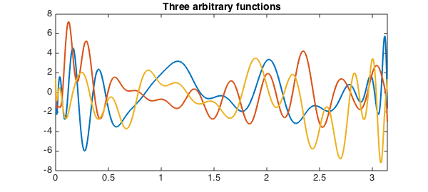
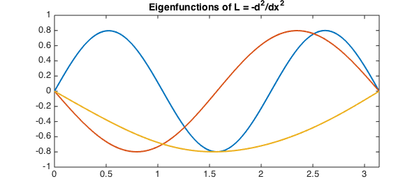

In many applications, one is confronted with the task of computing all of the eigenvalues of a large matrix which lie in a specified region of the complex plane. A recently developed class of algorithms for approaching this problem works by projecting the matrix down onto the given region, giving an eigenvalue problem of much smaller dimension. Of these algorithms, perhaps the best known is the FEAST algorithm due to Polizzi [3]. In this example, we will use Chebfun's powerful ODE capabilities to explore the application of a FEAST-like algorithm to the computation of eigenvalues of differential operators rather than matrices.
The Base Algorithm
Let us first give a brief description of how these methods work. For simplicity, let $A$ be a Hermitian matrix, and suppose we are interested in computing all of the eigenvalues of $A$ in a given real interval. The basic idea is the following. Suppose we were able to create a matrix $W$ whose columns form a basis for the eigenspace of $A$ corresponding to the eigenvalues of $A$ in the search interval. If we had such an object, we could use a Rayleigh-Ritz procedure [4] to compute the desired eigenvalues and eigenvectors. Indeed, a generalized eigenvalue $\mu$ and corresponding eigenvector $u$ of the pencil $(W^*AW, W^*W)$ correspond to an ordinary eigenvalue $\lambda$ and eigenvector $v$ of $A$ by $\lambda = \mu$ and $u = Wv$.
The problem is therefore reduced to computing a basis for the eigenspace of interest. This can be accomplished by first generating a set of $M$ random vectors, where $M$ is the number of eigenvalues of $A$ in the search interval. Gather these as columns into a matrix $Y$. We then project them onto this eigenspace by using a quadrature rule to discretize the contour integral identity [1, 2]
$$ W = PY = \int_\gamma (zI - A)^{-1}Y \: dz $$
where $\gamma$ is a simple piecewise smooth curve that encloses the eigenvalues inside our search interval and $P$ is the orthogonal projector onto the eigenspace of $A$ corresponding to these eigenvalues. Here, an appropriate choice for $\gamma$ would be a circle centered on the interval of interest. Unless we are very unlucky and the vectors in $Y$ turn out to be orthogonal to this subspace, the projected vectors will indeed form the basis we seek.
Computing $PY$ requires solving $M$ linear systems at each quadrature node. Computing the eigenvectors and eigenvalues of $A$ then requires solving an $M \times M$ generalized eigenvalue problem. Assuming that $M$ is much smaller than the dimension of $A$ (i.e., $A$ has relatively few eigenvalues in the search interval for its size), the computational savings by approaching the problem this way can be quite substantial!
A Continuous Analogue
We now consider, as we often do in Chebfun, what this algorithm looks like in the continuous case, replacing vectors by functions and the finite-dimensional matrix $A$ by an infinite-dimensional linear operator $L$. To be concrete, let us take $L$ to be the differential operator
$$ L = -\frac{d^2}{dx^2} $$
on $[0, \pi]$ with zero Dirichlet boundary conditions. To represent this operator in Chebfun, we use a chebop object:
L = chebop(0, pi); L.op = @(x, u) -diff(u, 2); L.lbc = 0; L.rbc = 0; L
L =
Linear operator:
-diff(u,2) = 0
operating on chebfun objects defined on:
[0 3.14159]
with
left boundary conditions:
u-BC = 0
right boundary conditions:
u-BC = 0
We will attempt to use the algorithm described above to compute the eigenvalues of $L$ inside the interval $[0, 10]$. In this case, we know that the eigenvalues are given in closed form by $\lambda_n = n^2, n = 1, 2, \ldots$ with corresponding eigenfunctions $f_n(x) = \sin(nx)$. Thus, there are three eigenvalues in $[0, 10]$, so we take $M = 3$.
The first thing the algorithm calls for are $M$ random vectors. The analogous objects to generate in the continuous case are $M$ arbitrary functions. We generate these by building chebfuns from random data at a handful of Chebyshev points on $[0, \pi]$, gathering them as columns into a quasimatrix. For later comparison, we start a timer as well so we can see how long it takes the algorithm to run.
LW = 'LineWidth'; lw = 2; FS = 'FontSize'; fs = 14;
tic
rng(67714070); % Seed the RNG for reproducibility.
Y = chebfun(2*randn(32, 3), [0 pi]);
plot(Y, LW, lw)
title('Three arbitrary functions', FS, fs)
xlim([0 pi])

Next, we must project these arbitrary functions onto the eigenspace spanned by the eigenfunctions of $A$ corresponding to the eigenvalues within our search interval of $[0, 10]$. It turns out that the contour integral relationship from above still applies in an appropriate sense in the continuous setting, so we do the projection by discretizing it just as before. The key difference is that instead of solving linear systems at each quadrature node, we must solve differential equations instead.
For our contour, we choose a circle centered at $5$ with radius $5$ so that it encloses all of $[0, 10]$. For the discretization, we use the 8-point midpoint rule, i.e., the 8-point trapezoid rule with the quadrature nodes rotated through an angle of $\pi/8$ to make them symmetric with respect to the real axis. Since $L$ is self-adjoint and "real", we can exploit this symmetry to cut the total number of boundary value problems we need to solve in half. We compute the quadrature nodes and weights:
K = 8; omega_k = exp(2*pi*1i*(0:1:(K-1)).'/K + 1i*pi/K); zk = 5*omega_k + 5; wk = omega_k/5;
Now we simply loop through the quadrature nodes, solving the BVPs and adding up the contributions to the integral as we go:
W = chebfun(zeros(2, 3), [0 pi]);
for (k = 1:1:K/2)
Ls = chebop(0, pi);
Ls.op = @(x, u) zk(k)*u + diff(u, 2);
Ls.lbc = 0;
Ls.rbc = 0;
for (j = 1:1:size(Y, 2))
W(:, j) = W(:, j) + 2*5*real(wk(k)*(Ls \ Y(:, j)));
end
end
W = real(W / K); % Take real part to discard imaginary rounding errors.
Finally, we set up and solve the generalized eigenvalue problem obtained via the Rayleigh-Ritz procedure described above. Observe that we have obtained quite a reduction in size here: this problem is of size 3-by-3, while L is infinite-dimensional! Note also that the inner products involved here are between functions instead of vectors:
[V, D] = eig(W'*(L*W), W'*W);
We're done! The total amount of time taken was
T = toc
T = 5.597531314000000
The eigenvalues of L are
format long diag(D)
ans = 9.000022136839711 4.001071254848362 1.000904202687470
These are accurate to about 4-5 digits. We can increase the accuracy by using more quadrature points; however, this comes at the cost of requiring the solution of more BVPs. The corresponding ($L^2$-normalized) eigenfunctions are
F = W*V;
for (k = 1:1:size(F, 2))
F(:, k) = F(:, k) / norm(F(:, k));
end
plot(F, LW, lw)
title('Eigenfunctions of L = -d^2/dx^2', FS, fs)
xlim([0 pi])
ylim([-1 1])

These are in excellent agreement with the known exact results from above.
Comparison with eigs
Of course, one does not need to use this method to compute eigenvalues of differential operators in Chebfun. A much easier way is available in the form of Chebfun's eigs function:
tic eigs(L, 3)
ans = 1.000000000000424 4.000000000001219 9.000000000001151
These numbers are accurate to about 13 digits, which is excellent. Moreover, the time taken was
T = toc
T = 1.028643443000000
which is considerably less than that taken by the projection-based method we used above. The projection-based method may therefore not be the most efficient method for computing eigenvalues of differential operators, but it is nonetheless interesting!
References
-
Chatelin, Francoise. Eigenvalues of Matrices (Revised Edition). SIAM, 2012.
-
Kato, Tosio. Perturbation Theory for Linear Operators (Second Edition). New York: Springer-Verlag, 1976.
-
Polizzi, Eric. Density-matrix-based algorithm for solving eigenvalue problems. Physical Review B, Vol. 79, No. 11, 2009.
-
Stewart, G. W. Matrix Algorithms, Volume II: Eigensystems. SIAM, 2001.